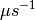

LoadVesuvio dialog.
Table of Contents
| Name | Direction | Type | Default | Description |
|---|---|---|---|---|
| Filename | Input | string | Mandatory | The run numbers that should be loaded. E.g.14188 - for single run14188-14195 - for summed consecutive runs14188,14195 - for summed non-consecutive runs |
| OutputWorkspace | Output | Workspace | Mandatory | The name of the output workspace. |
| SpectrumList | Input | int list | Mandatory | The spectrum numbers to load |
| Mode | Input | string | DoubleDifference | The difference option. Valid values: [‘SingleDifference’, ‘DoubleDifference’, ‘ThickDifference’, ‘FoilOut’, ‘FoilIn’, ‘FoilInOut’] |
| InstrumentParFile | Input | string | An optional IP file. If provided the values are used to correct the default instrument values and attach the t0 values to each detector | |
| SumSpectra | Input | boolean | False | If true then the final output is a single spectrum containing the sum of all of the requested spectra. All detector angles/parameters are averaged over the individual inputs |
The Vesuvio instrument at ISIS produces RAW <http://www.mantidproject.org/RAW_File> files in the standard format. However, due to the unique design of the instrument the raw counts from the input files must be manipulated before they are considered useful.
This algorithm wraps calls to LoadRaw and computes the counts () using the foil-cycling method described here.
The output is point data and not a histogram.
Load a single file & spectrum with default difference:
tof = LoadVesuvio("14188",SpectrumList=135)
print "Number of spectra:", tof.getNumberHistograms()
Output:
Number of spectra: 1
Sum runs on single spectrum with default difference:
tof = LoadVesuvio("14188-14193",SpectrumList=135)
print "Number of spectra:", tof.getNumberHistograms()
Output:
Number of spectra: 1
Sum runs on a range of spectra with default difference:
tof = LoadVesuvio("14188-14193",SpectrumList="135-142")
print "Number of spectra:", tof.getNumberHistograms()
Output:
Number of spectra: 8
Sum runs and spectra on a range of spectra with default difference:
tof = LoadVesuvio("14188-14193",SpectrumList="135-142", SumSpectra=True)
print "Number of spectra:", tof.getNumberHistograms()
Output:
Number of spectra: 1
Sum runs and spectra on a range of spectra using single difference method:
tof = LoadVesuvio("14188-14193",SpectrumList="135-142", SumSpectra=True,
Mode="SingleDifference")
print "Number of spectra:", tof.getNumberHistograms()
Output:
Number of spectra: 1
Categories: Algorithms | PythonAlgorithms
{kind=link}